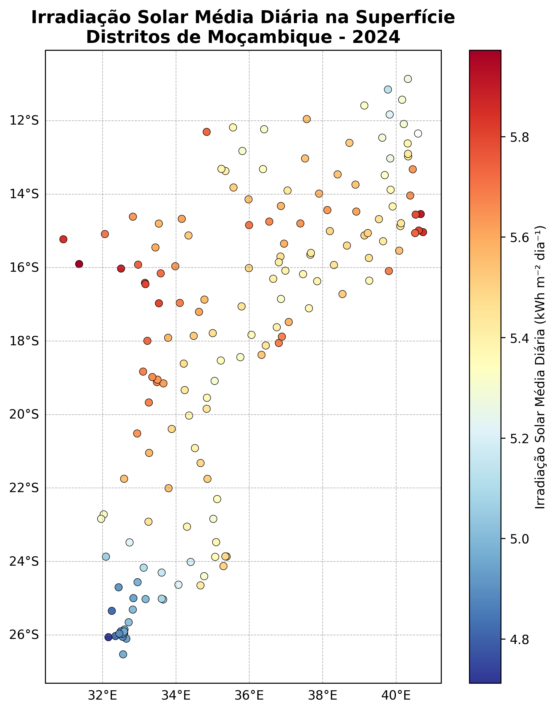

ERA5-Land — Média anual dos valores diários — 2024

Selecione um distrito
—
Descrição:
Este produto apresenta a média anual da irradiação solar diária
na superfície para os distritos de Moçambique, calculada a partir
dos dados ERA5-Land para 2024.
A variável principal é expressa em
kWh m⁻² dia⁻¹, representando a quantidade média
de energia solar recebida por unidade de área durante um dia.
O valor apresentado para cada distrito corresponde à média dos
valores diários ao longo do ano de 2024.